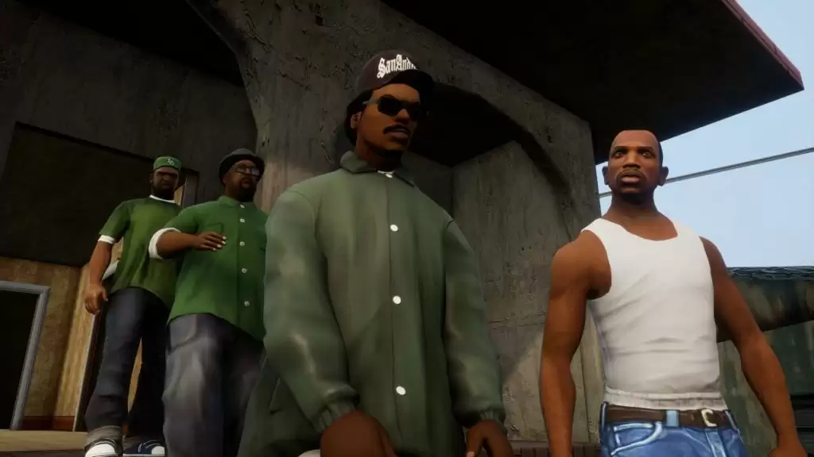

Bem-vindo ao site de fãs do GTA San Andreas!
Explore o mundo de San Andreas e seus personagens.
Grand Theft Auto: San Andreas é um jogo eletrônico de ação-aventura desenvolvido pela Rockstar North e publicado pela Rockstar Games. É o quinto título principal da série Grand Theft Auto e foi lançado em outubro de 2004 para PlayStation 2 e em junho de 2005 para Xbox e Microsoft Windows. Versões para plataformas móveis foram lançadas inicialmente em 2013, enquanto que uma versão aprimorada, sob o subtítulo The Definitive Edition, foi lançada em 2021. O jogo se passa no estado ficcional de San Andreas, com a história seguindo Carl "CJ" Johnson em sua luta para lidar com guerras de gangues, confrontos com policiais e as relações com sua família e amigos. O mundo aberto permite que os jogadores naveguem livremente pelas áreas rurais e urbanas de San Andreas.
Gameplay

A gameplay do gta san andreas na época em que foi lançada era ótima mais hoje em dia ela envelheceu mal por que os carros são muito faceis de se controlar o som doa carros não e lá aquelas coisas e movimentação do personagem tambem mais em geral tem muita gente que considera esse jogo como o melhor jogo até hoje.
Saiba mais sobre os emocionantes recursos de jogabilidade do GTA San Andreas.
Characters
Conheça os personagens inesquecíveis de San Andreas.